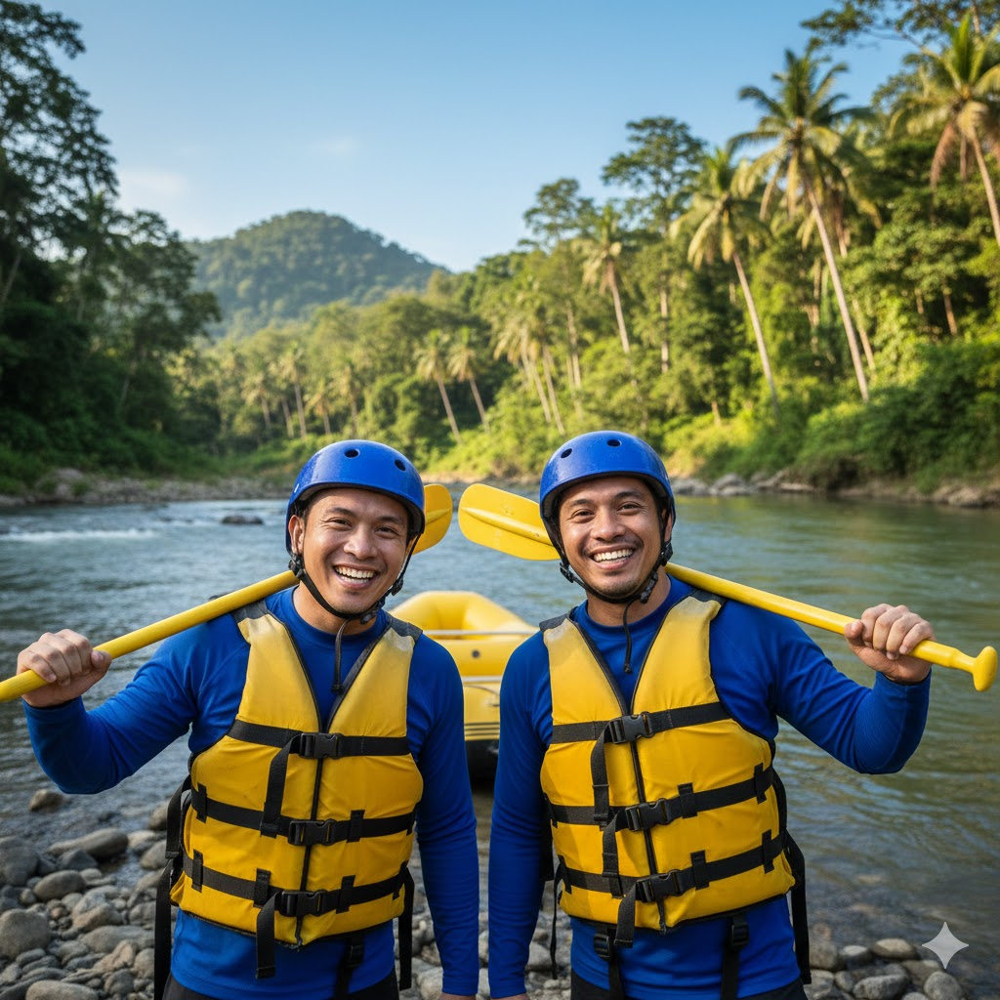

History
The Cagayan de Oro River has long been part of local life, flowing from the mountains of Bukidnon through the city and into Macajalar Bay, serving communities for transport, livelihood, and recreation. While locals had enjoyed floating and navigating the river for years, whitewater rafting as an organized activity began in 1995 when members of the Northern Mindanao Mountaineering Society explored the river’s rapids for adventure. Using basic equipment and guided by curiosity and passion, these early pioneers discovered the river’s potential for world-class whitewater experiences. In the late 1990s and early 2000s, rafting on the Cagayan de Oro River evolved into a formal tourism activity with improved safety standards, professional training, and better equipment. As interest grew, local guides and operators developed structured rafting routes suitable for beginners and experienced paddlers alike. Over time, the river gained national recognition and helped establish Cagayan de Oro as the “Whitewater Rafting Capital of the Philippines,” becoming a key attraction that continues to support tourism while highlighting the region’s natural beauty and adventurous spirit.
